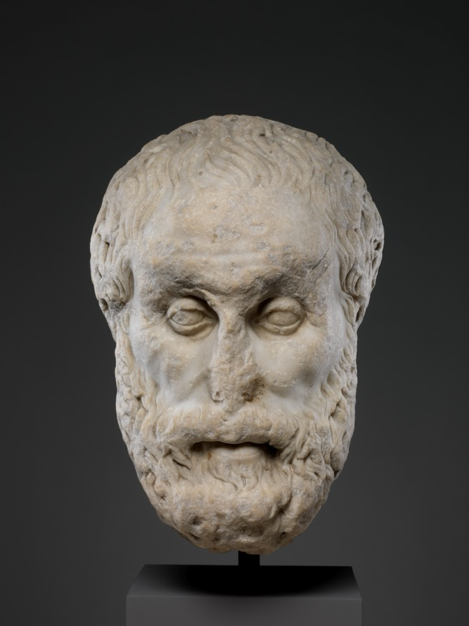

Discipline over motivation
Motivation is a mood. Discipline is a practice. We build the second one, on purpose, every day.

We help people build discipline, clarity, and emotional strength through timeless ideas and modern thinking.
Begin Your JourneyOur philosophy
Motivation is a mood. Discipline is a practice. We build the second one, on purpose, every day.
Ten minutes without input, done daily, changes how you think faster than any amount of advice.
Stoic thinking was never about indifference. It was about acting well with what you actually control.
“You have power over your mind, not outside events. Realize this, and you will find strength.”
Marcus Aurelius